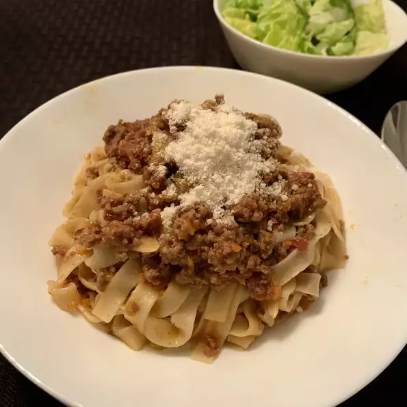

Bolognese Tagliatelle

This labor of love is not your traditional red meat sauce.
Is a delicious meat sauce that is refined and simmered for hours to bring out the great flavors of all the ingredients.
Combine it with tagliatelle or with your favorite pasta to create a satiny, creaminess from the pasta starches that make this a memorable meal.
Serve with a loaf of crusty Italian bread.
INGREDIENTS
- 4 ounces pancetta bacon, finely diced
- 3 carrots, finely diced
- 3 stalks celery, finely diced
- 2 onions, finely diced
- 3 tablespoons extra-virgin olive oil
- 1 pound 85% lean ground beef
- 1 pound ground pork
- ½ cup dry white wine
- 1 (28 ounce) can San Marzano whole peeled tomatoes, drained
- ½ teaspoon ground nutmeg
- ½ teaspoon salt
- ¼ teaspoon crushed red pepper
- 1 cup beef stock
- ¼ cup heavy cream
- 1 (16 ounce) box tagliatelle pasta
- ¼ cup grated Parmesan cheese, or to taste